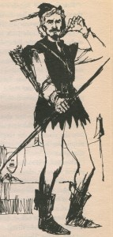
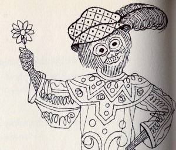
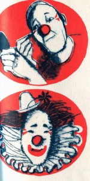
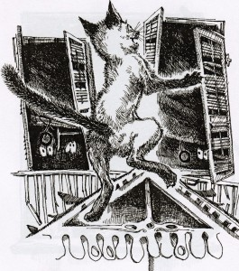
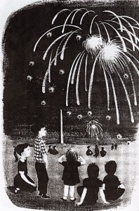
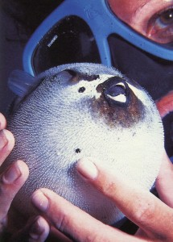
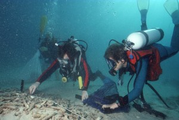

Q&A About Books
Q: What gave you the idea for ROBIN HOOD OF SHERWOOD FOREST?
A: A dear friend of mine loved Robin Hood when he was a child. He told me the stories in such an exciting way that I was inspired to write them. I wanted to keep a little bit of the old English, but still be readable for 4th grade readers. It worked!

Q: What gave you the idea for SHAKESPEAREAN SALLIES, SULLIES, AND SLANDERS: Insults for all Occasions?
A: I’ve always loved Shakespeare’s language. I read all his poems and plays. He was a master of insults, so I thought it would be fun to write the best of them for older kids to use. “His face is the worst thing about him” or “I do desire we be better strangers.”

Q: Why did you want to write IF YOU LIVED WITH THE CIRCUS?
A: My son, Peter, and I went to the circus every year. He asked me so many questions that cried out to be an If You Lived…..book. My favorite question is “Are clowns always funny? A clown’s life isn’t all laughs. The brand-new clowns have to do the worst stunts. A new clown gets smacked with paddles, soaked with tubs of water, and falls down after a wild chase.”

Q: What gave you the idea for SQUEALS & SQUIGGLES & GHOSTLY GIGGLES?
A: I had been writing books that took almost two years to finsh, I wanted to write a funny book that wouldn’t take so long. This book has funny “limer-eeks” and scary stories like the popular The Velvet Ribbon, magic tricks, games and a wildy funny “Dr. Diabolical” play that you and your friends might like to try. Jeffrey Higgenbottom did a great job with his whimsical illustrations.

Q: Why did you write WHY IT’S A HOLIDAY?
A: I stayed home from work on Labor Day, a holiday. My son started to ask all sorts of questions about what makes a holiday and their customs. This was my first book, published in 1960, before there were other holidays – Martin Luther King Day, Earth Day, Kwanza. You can find out about these holidays by clicking More About Holidays.

Q: Why did you write DOWN UNDER, DOWN UNDER: Diving Adventures on the Great Barrier Reef?
A: We had the chance of living on a dive boat in the Great Barrier Reef, Australia, for ten days. I saw a huge fish that weighed 300 pounds! One day I was surounded by sea snakes more deadly than cobras. I saw sharks in a feeding frenzy. In this book, I transformed all my adventures to that of a 12-year-old girl, which made for an exciting story. The amazing photographs are by my husband Marty and son Jim. I even took a couple of the photos!

Here is a picture I took of a pufferfish all puffed up.
Q: What gave you the idea for NIGHT DIVE?
A: “At night, fish sleep and you can see them up close.” As soon as I heard that, I wanted to try night diving. It’s mysterious and sometimes scary. I wrote the book as a story of a girl who makes a night dive and meets a barracuda hunting for food, sees the strange night colors of fishes that look so different by day, what she does when her underwater light fails and countless other experiences which actually happened to me. My husband Marty and son Jim took the pictures. This book won a big prize.
Q: Why did you write THE UNDERWATER WORLD OF THE CORAL REEF?
A: Once I started diving beneath the sea, I was completely awed by the beauties of the reef and the fish and corals that made the reef their home. I wanted to scuba dive all the time. I learned everything about the creatures of the sea – even their Latin scientific names. I wanted to share my knowledge with children and so I wrote this book about a day and a night on the coral reef. My husband Marty took most of the pictures.
Q: What gave you the idea for THE DESERT BENEATH THE SEA?
A: Dr. Eugenie Clark (The “Shark Lady”) told me fascinating stories about the creatures who live in the sandy bottom of the coral reef – jumping sand grains, the strange razor fish, slinky garden eels. This book also tells you how scientists work, and it’s also the story of our friendship. Eugenie and I made many scuba dives to write this book together.

We're staking out a burrow to watch what creatures appear.
Q: What gave you the idea for LITTLE WHALE?
In the Caribbean, we heard that a humpback whale and her calf had left their pod and were swimming in the channel. We grabbed our masks, snorkels and fins and went snorkeling for over an hour with the huge whale and her baby. I never felt so small or humble in my life. The whale let us come very close to her, even lifting her fin so I could swim under it. Whenever we got too close to the little whale, she and her baby swam away. Again I wanted to know everything about humpback whales. This book is the story of one humpback whale from the time of her birth (weighing almost a ton!) to adulthood.

This is the mother whale and her baby we swam with for over an hour.


{kind=link}
{kind=link}
{kind=link}
{kind=link}
{kind=link}
{kind=link}
{kind=link}
{kind=link}
{kind=link}